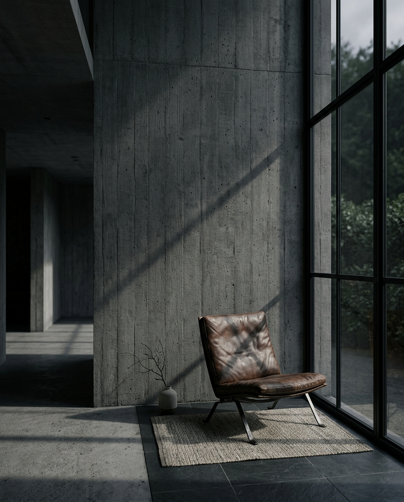
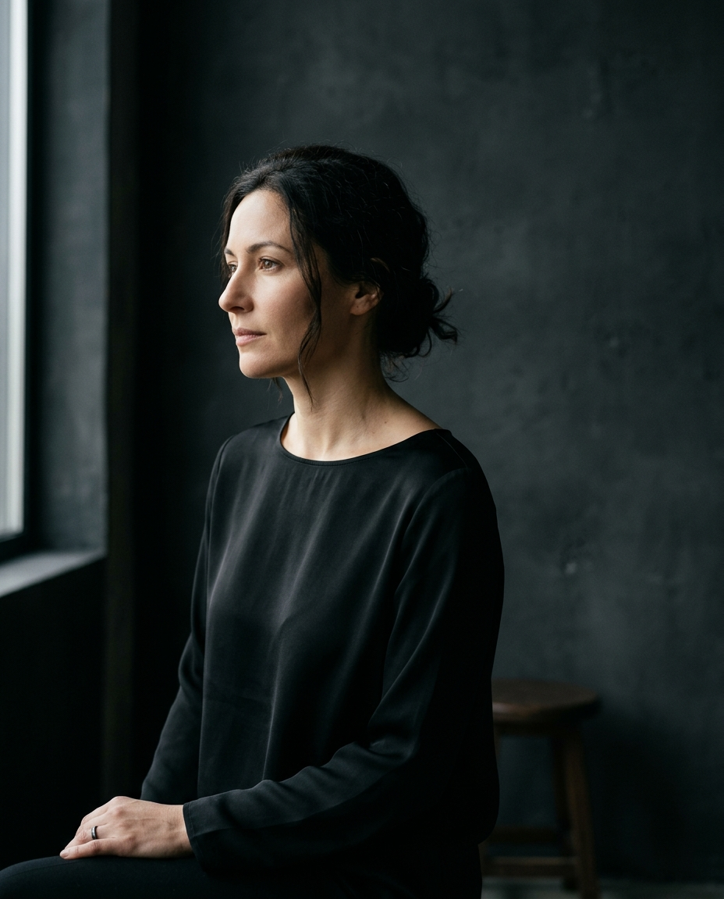
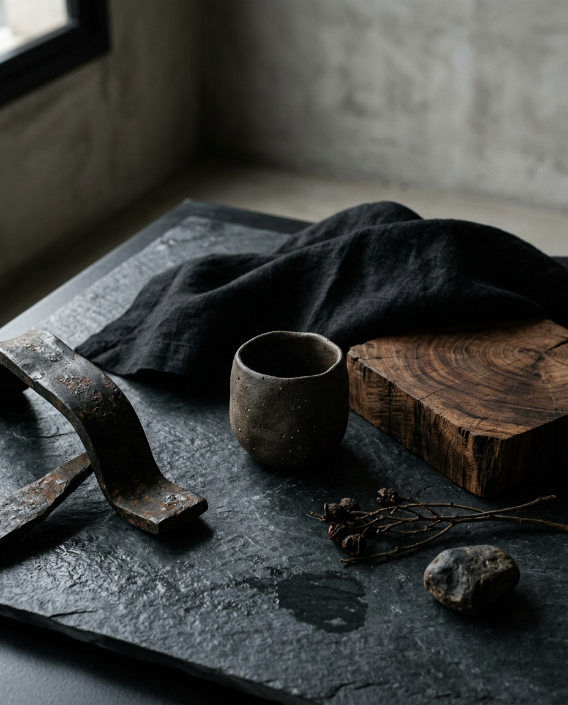

01EDITORIAL
2026Silêncio
Direção visual · Fotografia
Fotografia para marcas, pessoas e espaços que querem ser vistos com intenção, personalidade e presença.
Ver trabalhos ↘Mais do que registrar momentos, o LUME busca construir imagens que transmitam atmosfera, identidade e desejo.
Cada ensaio parte de uma direção visual pensada para o contexto, a pessoa e a história por trás do projeto.

01Direção visual · Fotografia

02Retrato · Direção

03Fotografia · Conteúdo
Imagens para posicionar marcas com consistência, personalidade e uma identidade visual própria.
Solicitar projeto ↗Ensaios pessoais e profissionais com direção para que cada pessoa apareça de forma natural e marcante.
Solicitar projeto ↗Produção de imagens para campanhas, redes sociais, produtos, espaços e lançamentos.
Solicitar projeto ↗O LUME é um estúdio conceitual dedicado à fotografia e à direção visual.
Trabalhamos com luz, composição e movimento para criar imagens que tenham força sozinhas e também funcionem dentro de uma identidade maior.
Entendemos objetivo, referências, público e o que a imagem precisa comunicar.
Definimos conceito, locação, composição e condução para construir a atmosfera certa.
As imagens são tratadas e entregues prontas para os canais e usos combinados.
Conte o que você está planejando e vamos conversar sobre a produção.
Falar sobre meu projeto ↗Atendimento mediante agendamento